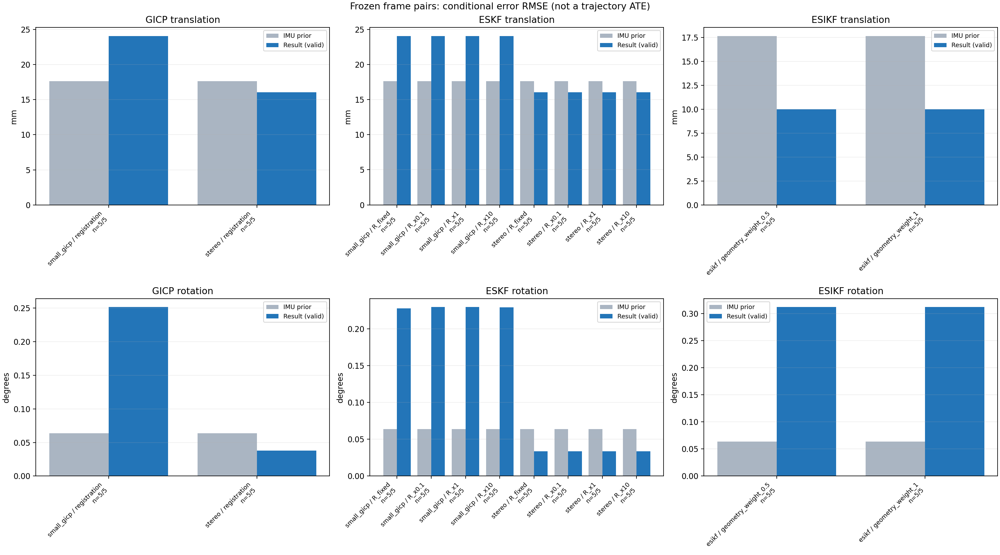

20261015_112845_yaw_left · depth=sgbm · cache=12fefcc396fc9a7c3bfa
配准代码版本：744ac2d993ae629b0cc44a3b1d995e04ab4fad48；观测生成版本：744ac2d993ae629b0cc44a3b1d995e04ab4fad48。
固定图像对与纯 IMU 先验；ESKF 回放固定 GICP 观测，ESIKF 直接读取点云。真值只用于此报告。
同时查看 converged 与 solver_status：上游默认 Stereo 在 max_iter / stopped_at_minimum 时也可能置 converged=true。valid 表示输入检查通过，不表示精度提升。欧氏 GICP 未提供独立的点距 RMSE，该列显示 NaN。
SGBM 调试基线：结果用于检查接口、坐标与融合行为，模型视差替换后需重新评估 GICP 精度和协方差。
误差按每对图像的锚点计算，单位 m / degrees。此处 RMSE 不是全序列 ATE；末帧受同一锚点条件约束。NIS 与条件马氏距离是诊断量，少量相关图像对不能用于宣称协方差已校准。
全部指标 CSV · R / P / K 矩阵 CSV · Stereo 求解逐轮 CSV · ESIKF 逐轮 CSV · 配置快照 · 矢量图
| stage | method | variant | valid | total | translation RMSE (m) | rotation RMSE (deg) |
|---|---|---|---|---|---|---|
| esikf | esikf | geometry_weight_0.5 | 5 | 5 | 0.0099719 | 0.31186 |
| esikf | esikf | geometry_weight_1 | 5 | 5 | 0.0099922 | 0.31191 |
| eskf | small_gicp | R_fixed | 5 | 5 | 0.024054 | 0.22807 |
| eskf | small_gicp | R_x0.1 | 5 | 5 | 0.024065 | 0.22968 |
| eskf | small_gicp | R_x1 | 5 | 5 | 0.024063 | 0.22966 |
| eskf | small_gicp | R_x10 | 5 | 5 | 0.024042 | 0.2294 |
| eskf | stereo | R_fixed | 5 | 5 | 0.016046 | 0.033624 |
| eskf | stereo | R_x0.1 | 5 | 5 | 0.016047 | 0.033544 |
| eskf | stereo | R_x1 | 5 | 5 | 0.016047 | 0.033544 |
| eskf | stereo | R_x10 | 5 | 5 | 0.016047 | 0.033544 |
| gicp | small_gicp | registration | 5 | 5 | 0.024081 | 0.25161 |
| gicp | stereo | registration | 5 | 5 | 0.016048 | 0.03813 |

| stage | case | method | variant | status | solver_status | inliers | converged | covariance_convention | covariance_from_hessian | fitness | registration_rmse_m | prior_trans_error_m | result_trans_error_m | prior_rot_error_deg | result_rot_error_deg | R_rot_trace_rad2 | R_pos_trace_m2 | nis_regularized |
|---|---|---|---|---|---|---|---|---|---|---|---|---|---|---|---|---|---|---|
| gicp | static_start | small_gicp | registration | eligible | 23002 | 1 | right_source_body | 1 | 0.79222 | nan | 7.8303e-05 | 0.0045422 | 0.0034263 | 0.081228 | 3.1783e-06 | 4.89e-05 | nan | |
| gicp | static_start | stereo | registration | eligible | max_iter | 19197 | 1 | left_target_body | 1 | 0.66062 | 0.49598 | 7.8303e-05 | 0.0013884 | 0.0034263 | 0.017361 | 3.8006e-09 | 7.0813e-08 | nan |
| gicp | sync_motion | small_gicp | registration | eligible | 21304 | 1 | right_source_body | 1 | 0.76441 | nan | 0.00039414 | 0.043597 | 0.010052 | 0.39565 | 4.3053e-06 | 6.1758e-05 | nan | |
| gicp | sync_motion | stereo | registration | eligible | max_iter | 17897 | 1 | left_target_body | 1 | 0.64239 | 0.57523 | 0.00039414 | 0.00091664 | 0.010052 | 0.016774 | 4.0345e-09 | 7.1034e-08 | nan |
| gicp | main_motion | small_gicp | registration | eligible | 18150 | 1 | right_source_body | 1 | 0.78616 | nan | 0.0033198 | 0.029893 | 0.017216 | 0.33692 | 7.168e-06 | 0.00010112 | nan | |
| gicp | main_motion | stereo | registration | eligible | max_iter | 15010 | 1 | left_target_body | 1 | 0.6499 | 0.30538 | 0.0033198 | 0.0045122 | 0.017216 | 0.022389 | 5.4373e-09 | 9.3259e-08 | nan |
| gicp | main_motion_long | small_gicp | registration | eligible | 14488 | 1 | right_source_body | 1 | 0.71933 | nan | 0.025379 | 0.0062404 | 0.14096 | 0.19796 | 1.1518e-05 | 0.0001364 | nan | |
| gicp | main_motion_long | stereo | registration | eligible | max_iter | 12295 | 1 | left_target_body | 1 | 0.61057 | 0.25954 | 0.025379 | 0.025734 | 0.14096 | 0.059446 | 8.6593e-09 | 1.3396e-07 | nan |
| gicp | static_end | small_gicp | registration | eligible | 14029 | 1 | right_source_body | 1 | 0.77057 | nan | 0.03002 | 0.0067555 | 0.004953 | 0.026498 | 2.7189e-06 | 5.2507e-05 | nan | |
| gicp | static_end | stereo | registration | eligible | max_iter | 12050 | 1 | left_target_body | 1 | 0.66242 | 0.48637 | 0.03002 | 0.024541 | 0.004953 | 0.051493 | 4.6506e-09 | 1.034e-07 | nan |
| eskf | static_start | small_gicp | R_x0.1 | updated | 23002 | 1 | right_source_body | 1 | 0.79222 | nan | 7.8303e-05 | 0.0045412 | 0.0034263 | 0.081174 | 3.1783e-07 | 4.89e-06 | 0.0030126 | |
| eskf | static_start | small_gicp | R_x1 | updated | 23002 | 1 | right_source_body | 1 | 0.79222 | nan | 7.8303e-05 | 0.0045351 | 0.0034263 | 0.08114 | 3.1783e-06 | 4.89e-05 | 0.0030077 | |
| eskf | static_start | small_gicp | R_x10 | updated | 23002 | 1 | right_source_body | 1 | 0.79222 | nan | 7.8303e-05 | 0.0044758 | 0.0034263 | 0.080822 | 3.1783e-05 | 0.000489 | 0.0029595 | |
| eskf | static_start | small_gicp | R_fixed | updated | 23002 | 1 | right_source_body | 1 | 0.79222 | nan | 7.8303e-05 | 0.0043975 | 0.0034263 | 0.077579 | 0.00022846 | 0.0012 | 0.0028568 | |
| eskf | static_start | stereo | R_x0.1 | updated | max_iter | 19197 | 1 | left_target_body | 1 | 0.66062 | 0.49598 | 7.8303e-05 | 0.0013882 | 0.0034263 | 0.017358 | 3.8006e-10 | 7.0813e-09 | 0.0002291 |
| eskf | static_start | stereo | R_x1 | updated | max_iter | 19197 | 1 | left_target_body | 1 | 0.66062 | 0.49598 | 7.8303e-05 | 0.0013882 | 0.0034263 | 0.017358 | 3.8006e-09 | 7.0813e-08 | 0.00022909 |
| eskf | static_start | stereo | R_x10 | updated | max_iter | 19197 | 1 | left_target_body | 1 | 0.66062 | 0.49598 | 7.8303e-05 | 0.0013882 | 0.0034263 | 0.017358 | 3.8006e-08 | 7.0813e-07 | 0.00022909 |
| eskf | static_start | stereo | R_fixed | updated | max_iter | 19197 | 1 | left_target_body | 1 | 0.66062 | 0.49598 | 7.8303e-05 | 0.0013337 | 0.0034263 | 0.017143 | 0.00022846 | 0.0012 | 0.00021404 |
| eskf | sync_motion | small_gicp | R_x0.1 | updated | 21304 | 1 | right_source_body | 1 | 0.76441 | nan | 0.00039414 | 0.043595 | 0.010052 | 0.39538 | 4.3053e-07 | 6.1758e-06 | 0.0058676 | |
| eskf | sync_motion | small_gicp | R_x1 | updated | 21304 | 1 | right_source_body | 1 | 0.76441 | nan | 0.00039414 | 0.043594 | 0.010052 | 0.39539 | 4.3053e-06 | 6.1758e-05 | 0.0058545 | |
| eskf | sync_motion | small_gicp | R_x10 | updated | 21304 | 1 | right_source_body | 1 | 0.76441 | nan | 0.00039414 | 0.043575 | 0.010052 | 0.39543 | 4.3053e-05 | 0.00061758 | 0.005752 | |
| eskf | sync_motion | small_gicp | R_fixed | updated | 21304 | 1 | right_source_body | 1 | 0.76441 | nan | 0.00039414 | 0.043581 | 0.010052 | 0.39296 | 0.00022846 | 0.0012 | 0.0055375 | |
| eskf | sync_motion | stereo | R_x0.1 | updated | max_iter | 17897 | 1 | left_target_body | 1 | 0.64239 | 0.57523 | 0.00039414 | 0.00091631 | 0.010052 | 0.016466 | 4.0345e-10 | 7.1034e-09 | 0.00010985 |
| eskf | sync_motion | stereo | R_x1 | updated | max_iter | 17897 | 1 | left_target_body | 1 | 0.64239 | 0.57523 | 0.00039414 | 0.0009163 | 0.010052 | 0.016466 | 4.0345e-09 | 7.1034e-08 | 0.00010985 |
| eskf | sync_motion | stereo | R_x10 | updated | max_iter | 17897 | 1 | left_target_body | 1 | 0.64239 | 0.57523 | 0.00039414 | 0.00091628 | 0.010052 | 0.016465 | 4.0345e-08 | 7.1034e-07 | 0.00010983 |
| eskf | sync_motion | stereo | R_fixed | updated | max_iter | 17897 | 1 | left_target_body | 1 | 0.64239 | 0.57523 | 0.00039414 | 0.0009118 | 0.010052 | 0.015943 | 0.00022846 | 0.0012 | 5.0541e-05 |
| eskf | main_motion | small_gicp | R_x0.1 | updated | 18150 | 1 | right_source_body | 1 | 0.78616 | nan | 0.0033198 | 0.029879 | 0.017216 | 0.27856 | 7.168e-07 | 1.0112e-05 | 0.0038353 | |
| eskf | main_motion | small_gicp | R_x1 | updated | 18150 | 1 | right_source_body | 1 | 0.78616 | nan | 0.0033198 | 0.029875 | 0.017216 | 0.2785 | 7.168e-06 | 0.00010112 | 0.0038332 | |
| eskf | main_motion | small_gicp | R_x10 | updated | 18150 | 1 | right_source_body | 1 | 0.78616 | nan | 0.0033198 | 0.029835 | 0.017216 | 0.2779 | 7.168e-05 | 0.0010112 | 0.0038127 | |
| eskf | main_motion | small_gicp | R_fixed | updated | 18150 | 1 | right_source_body | 1 | 0.78616 | nan | 0.0033198 | 0.029877 | 0.017216 | 0.27694 | 0.00022846 | 0.0012 | 0.0037855 | |
| eskf | main_motion | stereo | R_x0.1 | updated | max_iter | 15010 | 1 | left_target_body | 1 | 0.6499 | 0.30538 | 0.0033198 | 0.0045104 | 0.017216 | 0.017708 | 5.4373e-10 | 9.3259e-09 | 2.4665e-05 |
| eskf | main_motion | stereo | R_x1 | updated | max_iter | 15010 | 1 | left_target_body | 1 | 0.6499 | 0.30538 | 0.0033198 | 0.0045104 | 0.017216 | 0.017708 | 5.4373e-09 | 9.3259e-08 | 2.4665e-05 |
| eskf | main_motion | stereo | R_x10 | updated | max_iter | 15010 | 1 | left_target_body | 1 | 0.6499 | 0.30538 | 0.0033198 | 0.0045104 | 0.017216 | 0.017708 | 5.4373e-08 | 9.3259e-07 | 2.4665e-05 |
| eskf | main_motion | stereo | R_fixed | updated | max_iter | 15010 | 1 | left_target_body | 1 | 0.6499 | 0.30538 | 0.0033198 | 0.0045101 | 0.017216 | 0.017688 | 0.00022846 | 0.0012 | 2.4069e-05 |
| eskf | main_motion_long | small_gicp | R_x0.1 | updated | 14488 | 1 | right_source_body | 1 | 0.71933 | nan | 0.025379 | 0.0062336 | 0.14096 | 0.1522 | 1.1518e-06 | 1.364e-05 | 0.0023829 | |
| eskf | main_motion_long | small_gicp | R_x1 | updated | 14488 | 1 | right_source_body | 1 | 0.71933 | nan | 0.025379 | 0.006229 | 0.14096 | 0.15212 | 1.1518e-05 | 0.0001364 | 0.0023814 | |
| eskf | main_motion_long | small_gicp | R_x10 | updated | 14488 | 1 | right_source_body | 1 | 0.71933 | nan | 0.025379 | 0.0061852 | 0.14096 | 0.15132 | 0.00011518 | 0.001364 | 0.0023659 | |
| eskf | main_motion_long | small_gicp | R_fixed | updated | 14488 | 1 | right_source_body | 1 | 0.71933 | nan | 0.025379 | 0.0062329 | 0.14096 | 0.15118 | 0.00022846 | 0.0012 | 0.002358 | |
| eskf | main_motion_long | stereo | R_x0.1 | updated | max_iter | 12295 | 1 | left_target_body | 1 | 0.61057 | 0.25954 | 0.025379 | 0.025734 | 0.14096 | 0.067831 | 8.6593e-10 | 1.3396e-08 | 0.000281 |
| eskf | main_motion_long | stereo | R_x1 | updated | max_iter | 12295 | 1 | left_target_body | 1 | 0.61057 | 0.25954 | 0.025379 | 0.025734 | 0.14096 | 0.067831 | 8.6593e-09 | 1.3396e-07 | 0.000281 |
| eskf | main_motion_long | stereo | R_x10 | updated | max_iter | 12295 | 1 | left_target_body | 1 | 0.61057 | 0.25954 | 0.025379 | 0.025734 | 0.14096 | 0.067831 | 8.6593e-08 | 1.3396e-06 | 0.000281 |
| eskf | main_motion_long | stereo | R_fixed | updated | max_iter | 12295 | 1 | left_target_body | 1 | 0.61057 | 0.25954 | 0.025379 | 0.025734 | 0.14096 | 0.068214 | 0.00022846 | 0.0012 | 0.00027772 |
| eskf | static_end | small_gicp | R_x0.1 | updated | 14029 | 1 | right_source_body | 1 | 0.77057 | nan | 0.03002 | 0.0065446 | 0.004953 | 0.0094289 | 2.7189e-07 | 5.2507e-06 | 8.7753e-06 | |
| eskf | static_end | small_gicp | R_x1 | updated | 14029 | 1 | right_source_body | 1 | 0.77057 | nan | 0.03002 | 0.0065446 | 0.004953 | 0.0094288 | 2.7189e-06 | 5.2507e-05 | 8.7752e-06 | |
| eskf | static_end | small_gicp | R_x10 | updated | 14029 | 1 | right_source_body | 1 | 0.77057 | nan | 0.03002 | 0.0065443 | 0.004953 | 0.0094279 | 2.7189e-05 | 0.00052507 | 8.7747e-06 | |
| eskf | static_end | small_gicp | R_fixed | updated | 14029 | 1 | right_source_body | 1 | 0.77057 | nan | 0.03002 | 0.0065441 | 0.004953 | 0.0094274 | 0.00022846 | 0.0012 | 8.7742e-06 | |
| eskf | static_end | stereo | R_x0.1 | updated | max_iter | 12050 | 1 | left_target_body | 1 | 0.66242 | 0.48637 | 0.03002 | 0.024538 | 0.004953 | 0.011782 | 4.6506e-10 | 1.034e-08 | 3.9299e-06 |
| eskf | static_end | stereo | R_x1 | updated | max_iter | 12050 | 1 | left_target_body | 1 | 0.66242 | 0.48637 | 0.03002 | 0.024538 | 0.004953 | 0.011782 | 4.6506e-09 | 1.034e-07 | 3.9299e-06 |
| eskf | static_end | stereo | R_x10 | updated | max_iter | 12050 | 1 | left_target_body | 1 | 0.66242 | 0.48637 | 0.03002 | 0.024538 | 0.004953 | 0.011782 | 4.6506e-08 | 1.034e-06 | 3.9299e-06 |
| eskf | static_end | stereo | R_fixed | updated | max_iter | 12050 | 1 | left_target_body | 1 | 0.66242 | 0.48637 | 0.03002 | 0.024538 | 0.004953 | 0.01178 | 0.00022846 | 0.0012 | 3.9285e-06 |
| esikf | static_start | esikf | geometry_weight_1 | updated | 23168 | 1 | 1 | 0 | 0 | 7.8303e-05 | 0.0029249 | 0.0034263 | 0.027709 | 4.6603e-08 | 8.6048e-07 | nan | ||
| esikf | static_start | esikf | geometry_weight_0.5 | updated | 23168 | 1 | 1 | 0 | 0 | 7.8303e-05 | 0.0029228 | 0.0034263 | 0.027613 | 9.3161e-08 | 1.7193e-06 | nan | ||
| esikf | sync_motion | esikf | geometry_weight_1 | updated | 21981 | 1 | 1 | 0 | 0 | 0.00039414 | 0.014432 | 0.010052 | 0.16862 | 5.1851e-08 | 8.8216e-07 | nan | ||
| esikf | sync_motion | esikf | geometry_weight_0.5 | updated | 21987 | 1 | 1 | 0 | 0 | 0.00039414 | 0.014393 | 0.010052 | 0.16822 | 1.0364e-07 | 1.7623e-06 | nan | ||
| esikf | main_motion | esikf | geometry_weight_1 | updated | 18457 | 1 | 1 | 0 | 0 | 0.0033198 | 0.0043561 | 0.017216 | 0.14773 | 9.5156e-08 | 9.8593e-07 | nan | ||
| esikf | main_motion | esikf | geometry_weight_0.5 | updated | 18457 | 1 | 1 | 0 | 0 | 0.0033198 | 0.0043472 | 0.017216 | 0.14775 | 1.9021e-07 | 1.9708e-06 | nan | ||
| esikf | main_motion_long | esikf | geometry_weight_1 | updated_not_converged | 15020 | 0 | 1 | 0 | 0 | 0.025379 | 0.013345 | 0.14096 | 0.34602 | 1.2124e-07 | 1.167e-06 | nan | ||
| esikf | main_motion_long | esikf | geometry_weight_0.5 | updated_not_converged | 15013 | 0 | 1 | 0 | 0 | 0.025379 | 0.013339 | 0.14096 | 0.34729 | 2.4264e-07 | 2.3378e-06 | nan | ||
| esikf | static_end | esikf | geometry_weight_1 | updated | 15080 | 1 | 1 | 0 | 0 | 0.03002 | 0.0092367 | 0.004953 | 0.56187 | 1.1645e-07 | 9.6397e-07 | nan | ||
| esikf | static_end | esikf | geometry_weight_0.5 | updated | 15085 | 1 | 1 | 0 | 0 | 0.03002 | 0.0091999 | 0.004953 | 0.56104 | 2.3292e-07 | 1.93e-06 | nan |